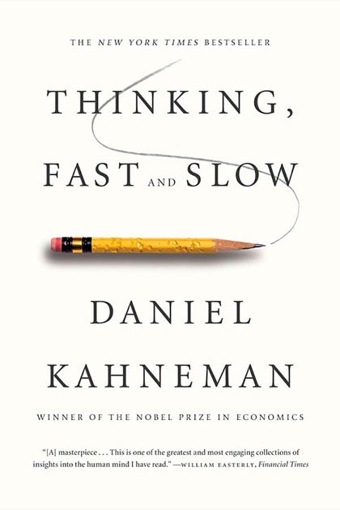

Writing / Book review
Thinking, Fast and Slow: The Psychology Book Every AI Engineer Should Read
Kahneman's dual-process theory gave AI its favorite metaphor for reasoning models, and it is an even better manual for the biases in your evals, your labels, and your launch decisions.

- Book
- Thinking, Fast and Slow
- Author
- Daniel Kahneman
- Publisher
- Farrar, Straus and Giroux, 2011 (paperback 2013)
- ISBN
- 9780374533557
- My rating
- ★★★★½ 4.5/5
VerdictNot an AI book, and one of the most useful books an AI engineer can read. It explains both the System 1 and System 2 metaphor and the human biases that corrupt our data and decisions.
It is strange to review a psychology book on an AI blog. But walk into any reasoning-model discussion today and you will hear "System 1" and "System 2" within minutes. Those terms come from this book. Most people using them have not read it.
The two systems
The most important insight is not that two systems exist. It is that System 2 is lazy. It accepts System 1's answers unless something triggers scrutiny. That is a surprisingly good description of an LLM pipeline without a verifier.
Why AI borrowed the metaphor
I wrote a full guide on engineering this: System 1, System 2: How to Give Your AI a Fast Path and a Slow Path. The book adds a crucial caution: System 2 can rationalize System 1's mistakes rather than correct them. Long reasoning traces do the same thing.
The biases are in your data
This is the part AI engineers underrate. Every label your annotators produce, and every launch decision your team makes, runs through human brains with these bugs:
Practical takeaways for ML teams
| Bias | Where it bites | Countermeasure |
|---|---|---|
| Anchoring | Annotation order effects | Randomize item order, blind labelers to model output |
| Planning fallacy | Project timelines | Reference-class forecasting from past projects |
| Confirmation bias | Reading A/B results | Pre-register metrics and decision rules |
| Overconfidence | Calibration | Measure it. Expect it in people and models alike |
Caveats
- Some priming studies cited in the book have failed to replicate, and Kahneman himself acknowledged concerns. The core dual-process framework and the heuristics-and-biases program are on much firmer ground.
- It is long and occasionally repetitive. The first two parts deliver most of the value.
Verdict
4.5 stars. Read it to understand the metaphor everyone is using, then keep it for the far more valuable lesson: your data, evals, and decisions are produced by biased minds, including yours.

Shivam Negi is an AI engineer and Principal Data Scientist who works on evaluating voice agents, small language models, and applied ML. More about me